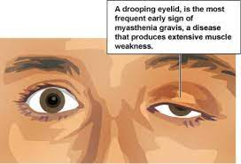

Myasthenia gravis (MG)

SYMPTOMS:
Initial symptoms of MG often come on suddenly. The neuromuscular disease causes your muscles to get weaker when you’re active. Muscle strength returns when you rest.
The intensity of muscle weakness often changes from day to day. Most people feel strongest at the start of the day and weakest at the end of the day.
- Double vision.
-
Drooping eyelids (ptosis).
-
Difficulty speaking, chewing or swallowing.
-
Difficulty moving their neck up or holding up their head.
-
Limb weakness.
-
Trouble walking.
CAUSES
MG is an autoimmune disease. For unknown reasons, the body’s immune system attacks itself.
In someone with a healthy immune system, nerves and muscles communicate a bit like a tiny baseball game:
- Nerves (the pitcher) send signals to muscles (the catcher) across a synapse (connection) called the neuromuscular junction. To communicate, nerves release a molecule called acetylcholine (the baseball).
-
Muscles have sites called acetylcholine receptors (the catcher’s glove). The acetylcholine binds to the receptors in the muscle tissue, like a ball landing in a glove.
-
When the acetylcholine binds to the receptor, it triggers the muscle fiber to contract.
DIAGNOSIS
Your healthcare provider will perform a physical exam and assess your symptoms. You may undergo these tests:
- Ice pack test: If you have severely drooping eyelids, your provider may place ice packs on your eyes or have you rest with your eyes shut in a dark room for a few minutes. If the drooping improves after the ice application or rest, you may have MG.
-
Antibody tests: About 85% of people with MG have unusually high levels of acetylcholine receptor antibodies in their blood. Approximately 6% patients have muscle-specific kinase (MuSK) antibodies. Antibodies may not be detected in less than 10% of MG patients.
-
Imaging scans: An MRI or CT scan can check for thymus gland problems like tumors.
Electromyogram (EMG): An EMG measures the electrical activity of muscles and nerves. This test detects communication problems between nerves and muscles.
TREATMENT
Myasthenia gravis is a treatable disease and most patients will live a relatively normal life with treatment.
Treatments for MG focus on improving symptoms. Treatments include:
- Medications: Cholinesterase inhibitors (anticholinesterase) boost signals between nerves and muscles to improve muscle strength. Immunosuppressants, including corticosteroids, decrease inflammation and reduce your body’s production of abnormal antibodies.
-
Monoclonal antibodies: You receive intravenous (IV) infusions of biologically engineered proteins. These proteins suppress an overactive immune system.
-
IV immunoglobulin (IVIG): You receive IV infusions of donor antibodies over a period of two to five days. IVIG can treat myasthenia crisis as well as generalized MG.
Plasma exchange (plasmapheresis): An IV line removes abnormal antibodies from your blood.
-
Surgery: A thymectomy is surgery to remove the thymus gland. Even if tests don’t show a problem with your thymus gland, surgical removal sometimes improves symptoms.